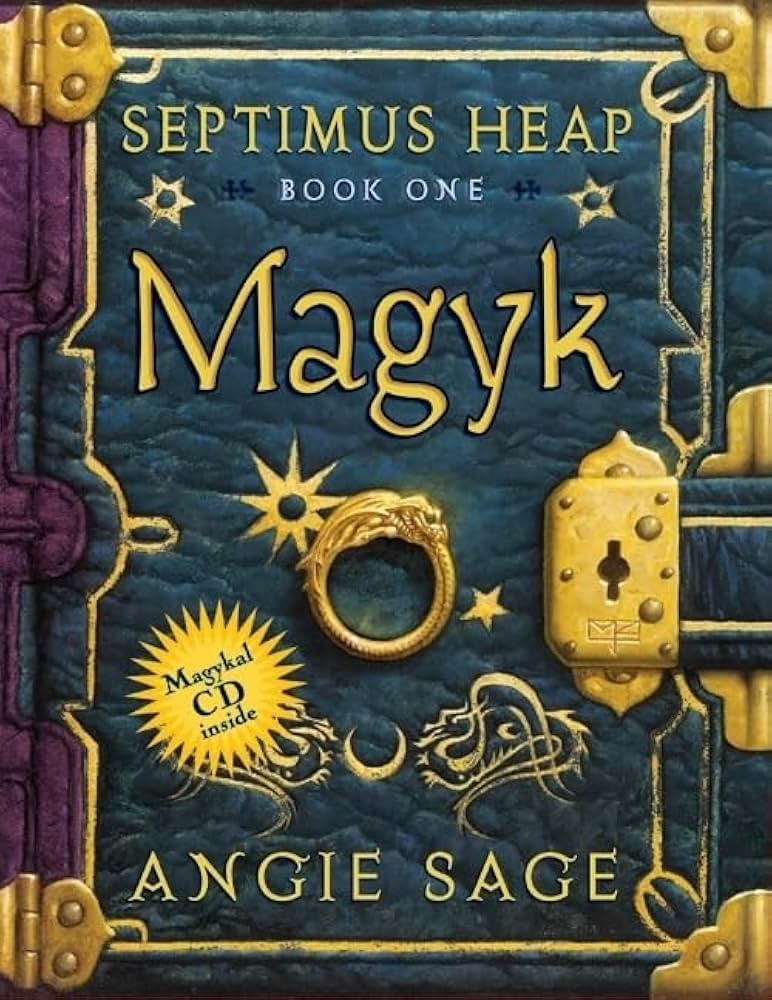

Published: July 5, 2022
Age Range: 10-14
Genre: Fantasy
Rating: ⭐⭐⭐⭐
Septimus Heap Book One: Magyk
If you enjoy stories about seventh sons of seventh sons and magyk, this is the book for you. Read More...
Published: July 5, 2022
Age Range: 10-14
Genre: Fantasy
Rating: ⭐⭐⭐⭐
If you enjoy stories about seventh sons of seventh sons and magyk, this is the book for you. Read More...
Published: December 12, 2021
Age Range: 12-16
Genre: Fantasy
Rating: ⭐⭐⭐⭐
The anticipated new novel by Rick Riordan. After Greek mythology (Percy Jackson), Greek/Roman (Heroes of Olympus), and Egyptian (Kane Chronicles), Rick decides to try his hand with Norse Mythology, and the end result is good.